DeCodec: Towards Controllable Audio Processing via Speech and Background sound Decoupling in Neural Codecs
Abstract
In real world, speech and background sound coexist, and different audio tasks focus on distinct information components above.
This paper proposes a novel neural codec named DeCodec to decouple speech and background sound from the representation domain and further decomposes speech into semantic and residual paralinguistic, thereby enabling a unified feature extractor to provide controllable information representations tailored to different audio tasks, filling a gap in existing audio codecs.
Specifically, based on the classical codec architecture, the proposed subspace orthogonal projection block projects primary audio embeddings into two orthogonal subspaces for representation.
Combined with the proposed representation swap training procedure, the two orthogonal subspaces can be constrained to correlate to the speech and background sound subspaces, respectively, enabling a parallel residual vector quantizers (RVQs) to quantize the speech and background sound representations.
Additionally, by introducing semantic guidance to speech RVQ, speech is hierarchically quantized into semantic and residual sublinguistic quantized vectors.
Experimental results show that DeCodec alone can achieve speech reconstruction and speech enhancement tasks with advanced performance.
Furthermore, the one-shot VC task also confirms the effective disentanglement of semantic-residual sublinguistic information by DeCodec.
In downstream speech recognition tasks, DeCodec representations significantly improve noise robustness and outperform baselines.
In downstream speech synthesis (TTS) tasks, the proposed DeCodedc tokens achieve zero-shot TTS with noisy speech prompts and allows control of whether background sound is retained.
Figure 1. The overview of the proposed DeCodec.
Figure 2. Flowchart of the proposed RST training procedure.
Results: DeCodec-only
a. Overview of functions
Table 1. Guidelines for using DeCodec to perform speech reconstruction, SE, background sound extraction, one-shot VC, and one-shot VC+SE functions.
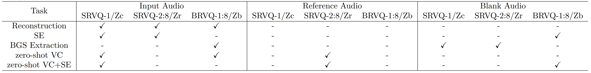
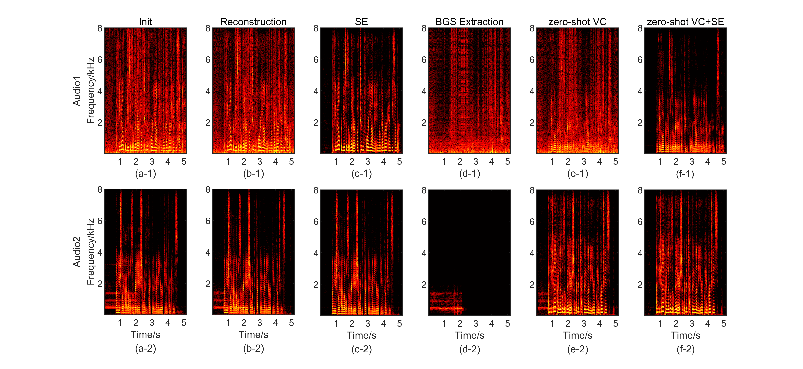
Figure 3. Demos of audio tasks processed by DeCodec.
(a-1)
(b-1)
(c-1)
(d-1)
(e-1)
(f-1)
(a-2)
(b-2)
(c-2)
(d-2)
(e-2)
(f-2)
b. Codec Reconstruction
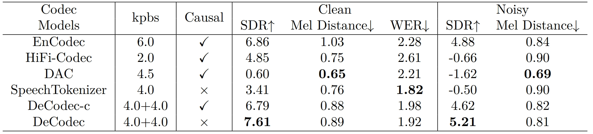
Table 2. Reconstruction quality evaluation of codec models. Best results are highlighted in BOLD.
Demos of Reconstruction performance of Code models
Init
Encodec
DAC
SpeechTokenizer
DeCodec
c. Speech Enhancement
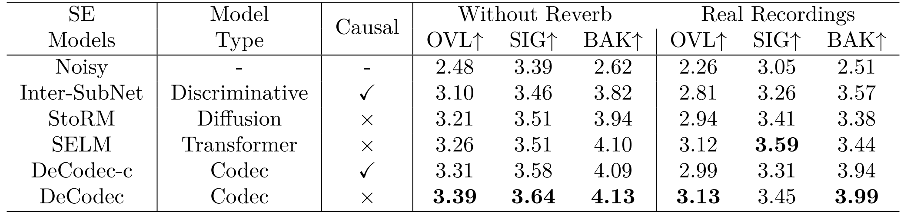
Table 3. The DNSMOS scores of SE based on different SE models on the DNS Challenge test set. Best results are highlighted in BOLD.
Demos of SE, BGS extraction and semantic reconstruction
Init
StoRM
DeCodec: SE
DeCodec: BGS extraction
DeCodec: semantic reconstruction
d. one-shot VC
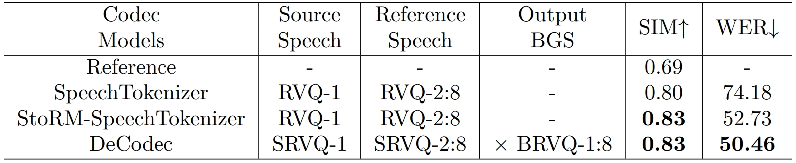
Table 4. Results of one-shot VC on different codec models on the noisy speech test set. Best results are highlighted in BOLD.
Extra demos of one-shot VC with different methods
Demos of one-shot VC
Source
Reference
SpeechTokenizer
StoRM+SpeechTokenizer
DeCodec
e. Ablation study
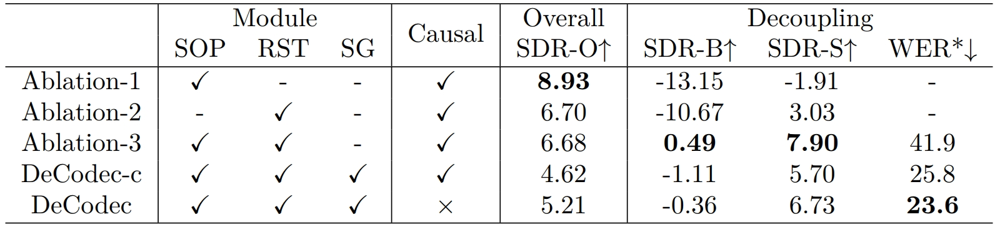
Table 5. Results of Ablation studies on Decodec on the noisy speech test set. Best results are highlighted in BOLD.
Figure 4. Analysis of the proposed SOP method.
Figure 5. Visualization of quantized output of different SRVQ layers of Decodec.
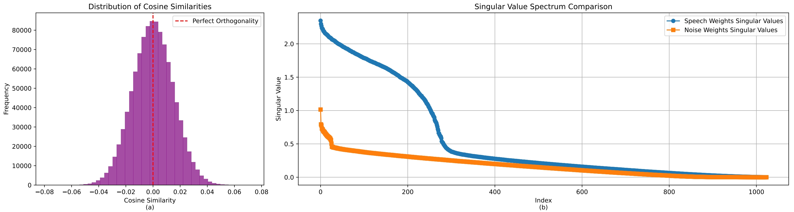
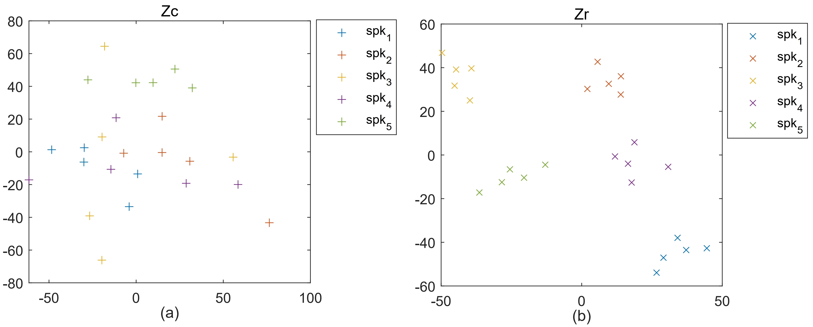
Results: Downstream Tasks
Table 6. The WER* results of ASR based on different codec models. Best results are highlighted in BOLD.
Table 7. The subjective results of one-shot TTS based on different codecs on the noisy speech test set. Best results are highlighted in BOLD.
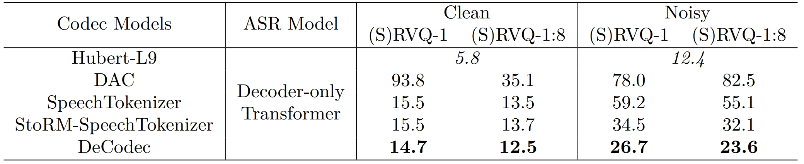
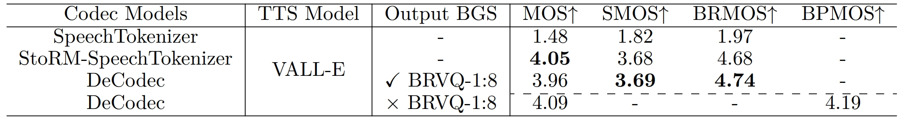
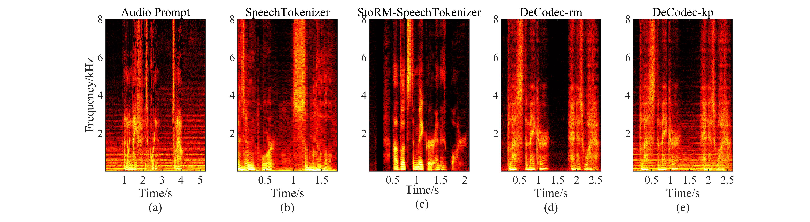
Figure 6. Spectrogram visualization of the real recording prompt, generated speech by SpeechTokenizer, SpeechTokenizer with StoRM pre-SE, DeCodec with background-sound removed and DeCodec with background-sound kept. The text promt is 'Bless the Maker and his water'.
(a)
(b)
(c)
(d)
(e)
Extra demos of TTS
Audio Prompt
Text Prompt
SpeechTokenizer
StoRM+SpeechTokenizer
DeCodec: remove BGS
DeCodec: preserve BGS
On friday confession will be heard all the afternoon after beads.
I must know about you.
Then the leader parted from the line.
Some things is crystal clear I can feel it.
Welcome back, my old friend.
An extra fun application—film dubbing with VC
Audio prompt
Init
one-shot VC by using NAR of down stream TTS model.